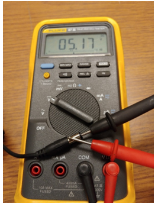
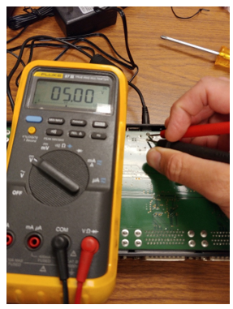

Procedure
- Check the Power Supply (Note:
All of the following pictures were taken with the same failing power supply and Edgeport.)
- In open circuit, it is possible for the supply to appear to be good despite
not functioning under load. This example shows a no-load power output of
5.17VDC 
- Therefore, it is recommended that at this point, the Edgeport be disassembled
on a non-conductive surface. Please note that only one of the screws of the 19
inch rack mount brackets must be removed. The other screw should be loosened
only slightly so that the metal plate that the bracket screws into is retained
in the Edgeport shell
- Alternatively, a 2.5 Ohm, 5W or greater preferably 15W, load resister can be used to simulate a 2 Amp load on the power supply. If this method is chosen, caution is urged as the resister will heat up.
- Even when connected to the Edgeport, the power supply can still appear to be
functioning, as shown below. Note that the back side of the Edgeport PCB is
being probed. 
- Therefore, to observe the Edgeport under full load, the USB cable to the
Integrity server must also be connected. The FSC may need to be rebooted to
force the Integrity to reconnect to the Edgeport. Otherwise, there will still
be no load on the Edgeport (reference FES-03-106 for the reboot process). The
image on the left shows the USB connected, but the Integrity not communicating.
The image on the right shows the Integrity connected and communicating to the
Edgeport (even at only slightly over 4V).

- In open circuit, it is possible for the supply to appear to be good despite
not functioning under load. This example shows a no-load power output of
5.17VDC
- If the power supply delivers less than 4.5VDC under load, it should be considered to be failing. If it delivers under 4.75VDC, it is suspect. Obtain a replacement power supply using the specifications or part numbers above.
- Reassemble the Edgeport.
- Reconnect the Edgeport to the FSC Integrity computer. Use a new power supply if indicated by the tests in Step 1.
- Reboot the FSC Integrity computer (see FES-03-106) to re-establish communications with the FSC.